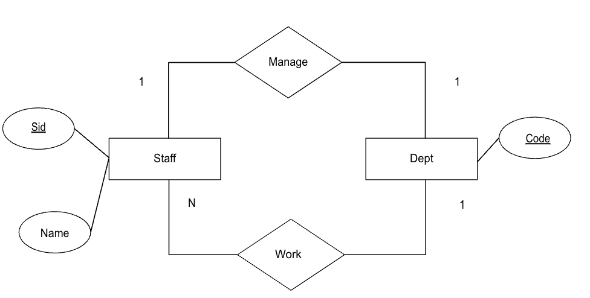

50.003 - Express.js and MySQL
Learning Outcomes
By the end of this unit, you should be able to
- Use MySQL to manage a relational database
- Integrate the restful API with MySQL as the database.
- Use view to present user requested information
- Use AJAX and JSON end-points to present user requested information
Relational Databases
From the previous unit, we learn that Relational Database is an alternative to provide a logical model (and physical model) to a database design. Relational Database, informally speaking, represent data in terms of relations (or tables). A table is a set of records that have the same set of attributes.
For instance, given the ER diagram

We could
- represent the
staffentity as a table | id | name | |---|---| | 1 | aaron | | 2 | betty |idis the primary key -
reprsent the
deptentity as a table | code | |---| | HR|codeis the primary key. -
represent the
Workrelationship as a table | id | code | |---|---| | 1 | HR| | 2 | HR|idandcodetogether form the primary key. - represent the
Managerelationship as a table | id | code | |---|---| | 2 | HR | eitheridorcodecan be the primary key.
Sometimes, we just represent the above using a simpler schema representation for documentation purposes. * staff(id, name) * dept(code) * work(id, code) * manage(id, code)
Next let's implement the above logical design using MySQL
MySQL
To install MySQL,
- If you are using windows or Mac, you can download and install from
url https://dev.mysql.com/downloads/mysql/ - If you are using Ubuntu or Ubuntu subsystem in Windows
```bash sudo apt install mysql-server ````
To create a database in MySQL, we use the mysql client shell
sudo mysql
Type 'help;' or '\h' for help. Type '\c' to clear the current input statement.
mysql> create database staffdir;
Query OK, 1 row affected (0.04 sec)
mysql> use staffdir;
Database changed
mysql>
In the above we login to the mysql client as the root user. In the MySQL Shell,
we create a databse name staffdir. We then use use commnad to switch the current working database to staffdir.
Data Definition Language
As a standard option for SQL compatible database, MySQL offers a subset of the language to enable the user to define the database tables, AKA Data Definition Language.
First let's create the staff table and the dept table
CREATE TABLE staff(
id INTEGER PRIMARY KEY,
name VARCHAR(255)
);
CREATE TABLE dept(
code CHAR(2) PRIMARY KEY
);
The create table statement specifies the table name (preceding the paranthesis),
and the attributes (inbetewen the parenthesis). We have to define the type of the attribute, INTEGER as integer, VARCHAR(255) as a variable length character array with max length 255. In addition, we specify the primary key using the PRIMRAY KEY keyword.
Note that SQL statements are case insensitive.
Next we consider the tables for the two relationships,
CREATE TABLE work(
id INTEGER,
code CHAR(2),
PRIMARY KEY (id, code),
FOREIGN KEY (id) REFERENCES staff(id),
FOREIGN KEY (code) REFERENCES dept(code)
);
CREATE TABLE manage(
id INTEGER UNIQUE,
code CHAR(2) PRIMARY KEY,
FOREIGN KEY (id) REFERENCES staff(id),
FOREIGN KEY (code) REFERENCES dept(code)
);
Since the attribtues of the work table (similarly, manage) are dependent on those defined in the entities tables, namely staff and dept. There must be some kind of integerity checking to be done by the database. The FOREIGN KEY key word specify that id in work must be an existing id in staff table. Similar obsevation applies ot the code attribute.
The database will return an error if
- a record with id not existing in
staffbeing inserted intowork. - a record with id used
workbeing deleted fromstaff. - ...
To drop a table, we can use a DROP TABLE statement
DROP TABLE manage;
For the full set of DDL operations for MySQL,
https://dev.mysql.com/doc/refman/8.0/en/innodb-online-ddl-operations.html
Data Manipulation Language
To insert records into the tables, we use the INSERT statements
INSERT INTO staff (id, name) VALUES (1, "aaron"), (2, "betty");
INSERT INTO dept (code) VALUES ("HR");
INSERT INTO work (id, code) VALUES (1, "HR"), (2, "HR");
INSERT INTO manage (id, code) VALUES (2, "HR");
To retrieve the records from a table, we use the SELECT statement
For instance
SELECT * FROM work;
returns the list of records (id and code) in the work table.
The query below
SELECT id FROM work where code = "HR";
returns the list of staff id from the HR department.
The query below
-- find all names of staff who are working in the HR department
SELECT staff.name FROM work INNER JOIN staff ON work.id WHERE work.code = "HR";
finds the list of staff names from the HR department.
We can also perform aggregation.
SELECT count(id), code FROM work
GROUP BY code;
finds the number of staff for each department.
To update a set of records in a table, we use the UPDATE statement.
For example the following statement change the name of staff with id = 2 to "beatrice".
UPDATE staff SET name = "beatrice" WHERE id = 2;
To delete a set of records in a table, we use the DELETE statement.
DELETE FROM manage WHERE code = "HR";
Express.js with MySQL
Let's create a similar project structure
mkdir my_mysql_app
cd my_mysql_app
npx express-generator --view=ejs
npm i
npm i mysql2
Next login to mysql client shell and create a database and a databse user;
CREATE DATABASE echo;
CREATE USER 'pichu'@'localhost' IDENTIFIED BY 'pikaP!'; -- we may replace % by hostname/ip to restrict the access
GRANT ALL PRIVILEGES ON echo.* TO 'pichu'@'localhost';
FLUSH PRIVILEGES;
The first statement creates a database named echo. The second statement create a database user with name pichu located at the localhost with password as pikaP!.
The third statement grants all the privileges on the echo database to this user. The last statement ensure all the privilege updates are written to the disk.
Go to the express.js project root folder, namely my_mysql_app, create a sub folder with name models. In folder models, create a db.js file with the following content.
const mysql = require('mysql2')
let pool = mysql
.createPool({
host: "localhost",
user: "pichu",
database: "echo",
password: "pikaP!",
connectionLimit: 10,
})
.promise();
async function cleanup() {
await pool.end();
}
module.exports = {pool, cleanup};
In the second statement, we create a connection pool to the mysql database. A connection pool allows us to regular the resource usage for database operations.
The rest are similar to the one we learned using mongodb.
Next in the same folder (models), create a file named message.js with the following content.
const db = require('./db.js');
const tableName = 'message';
class Message {
constructor(msg, time) {
this.msg = msg;
this.time = time;
}
}
async function sync() {
try {
db.pool.query(`
CREATE TABLE IF NOT EXISTS ${tableName} (
msg VARCHAR(255),
time DATETIME PRIMARY KEY
)
`);
} catch (error) {
console.error("database connection failed. " + error);
throw error;
}
}
async function all() {
try {
const [rows, fieldDefs] = await db.pool.query(`
SELECT msg, time FROM ${tableName}
`);
var list = [];
for (let row of rows) {
let message = new Message(row.msg, row.time);
list.push(message);
}
return list;
} catch (error) {
console.error("database connection failed. " + error);
throw error;
}
}
async function insertOne(message) {
try {
const [rows, fieldDefs] = await db.pool.query(`
INSERT INTO ${tableName} (msg, time) VALUES (?, ?)
`, [message.msg, message.time]);
} catch (error) {
console.error("database connection failed. " + error);
throw error;
}
}
async function insertMany(messages) {
for (let message of messages) {
await insertOne(message);
}
}
module.exports = { Message, all, sync, insertOne, insertMany }
Similar to how my_mongo_app, we define a class Message to model each message received and saved. MySQL data must be stored in a table with schema definition.
We define a sync function which creates the table in the database if it is not there. This function will be called in the app.js when the web app starts.
We provide a set of functions.
- Function
allretrieves all the messages from the table. - Function
insertOneinserts a message using the INSERT statement. In this case we find two?s in the statement, these two question marks are the placeholders for the verified values. In this casemessage.msgandmessage.timewill be subsituted in the statement if they are valid. Themysql2library will verify that the values substituting?do not contain illegal characters which might cause some security issues, (which will be discussed in some class later). - Function
insertManyinserts a list of messages.
Next we create a routes/echo.js file with the following content,
const express = require('express');
const model = require('../models/message.js');
var router = express.Router();
/* GET echo listing. */
router.get('/:msg', async function(req, res, next) {
const msg = req.params.msg;
const message = new model.Message(msg, new Date());
await model.insertMany([message]);
const messages = await model.all();
console.log(messages);
res.send(`${JSON.stringify(messages)}`);
});
module.exports = router;
which is similar to what we have seen in the my_mongo_app.
Finally, in the app.js file, we include the following
var logger = require('morgan');
// adding the following
const db = require('./models/db.js');
const process = require('process');
process.on('SIGINT', db.cleanup);
process.on('SIGTERM', db.cleanup);
const message = require('./models/message.js');
message.sync();
// end
We imported the db.js file we created and process library so that we can register the db.cleanup function as the callback when the web app terminates.
We also imported the message model module so that we can call message.sync() to make sure the table exists.
Finally we add the following to app.js so that we can call the echo router on the URL path /echo.
app.use('/echo', echoRouter);
Exercise (Not Graded)
Can you modify the echo router so that it will return the most recent 3 messages?
In the above example, we incorporate the model layer to the web app. The models abstract away the underlying database operations in forms of function calls and class object instantiation.
Alternatively, we could use the sequelize library to help us to generate some of these codes. You are encouraged to check out the sequelize library.
https://sequelize.org/